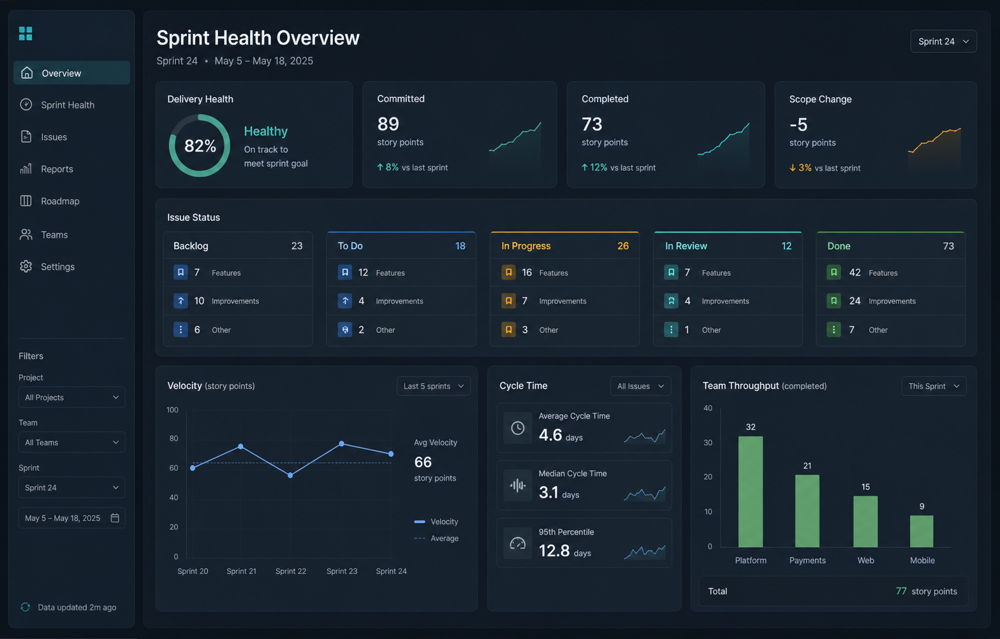
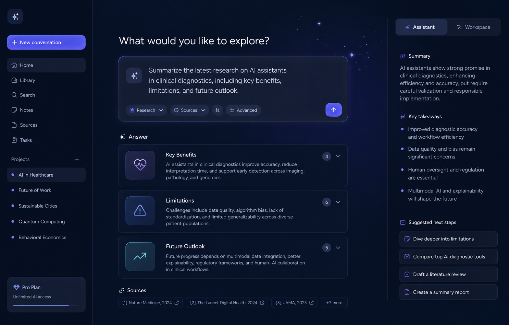
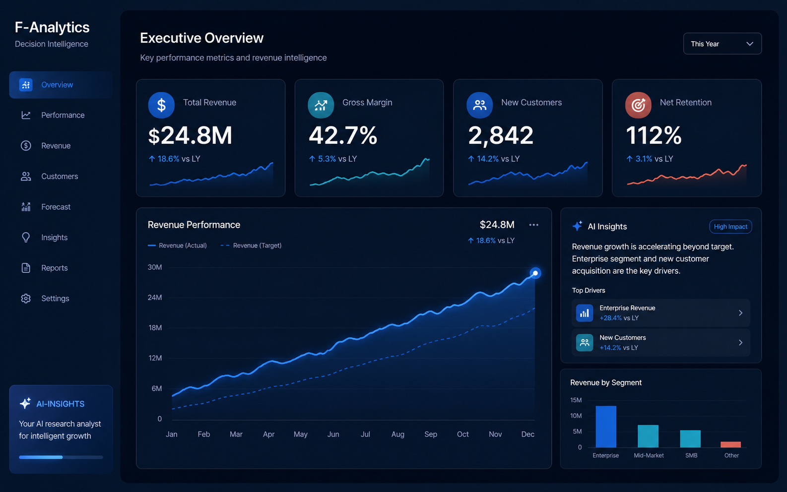

BBA, Accounting
Minor in Computer Science · UTSA, 2025
Junior software engineer · Full-stack developer
I turn operational problems into reliable web applications, APIs, automations, and data products - from production rental software to internal enterprise workflows.

01 · About
 San Antonio, Texas · 2026
San Antonio, Texas · 2026
I bring an operator's eye to software: understand the workflow, find the friction, then build the system that removes it.
My path started in accounting and business operations, where accuracy and process matter. Computer science gave me the tools to turn those instincts into production applications. Today I build across the stack while working in product compliance at H-E-B - automating submissions, querying operational data, and partnering with teams to improve how work gets done.
Minor in Computer Science · UTSA, 2025
Reliable systems, clear interfaces, measurable impact.
02 · Experience
Hands-on experience shipping software, automating workflows, validating data, and supporting the people who rely on those systems.
03 · Selected work
Production software and focused engineering projects spanning full-stack development, automation, AI, and analytics.
A production property-management platform built for a real rental business. It brings public listings, applicant registration, showing reservations, resident portals, maintenance requests, lease documents, and admin workflows into one secure experience.

Live demo ↗A React and Flask tool for tracking throughput, cycle time, delivery health, and issue status with reliable demo-data fallback.

Live demo ↗A GPT-4o assistant supporting text, image, and PDF inputs with session-based chat, file processing, and a custom responsive interface.

Live demo ↗An interactive decision-intelligence dashboard for exploring retail KPIs, analyzing trends, and generating AI-assisted business summaries.
04 · Contact
I'm open to software engineering opportunities and conversations about building practical, reliable products.